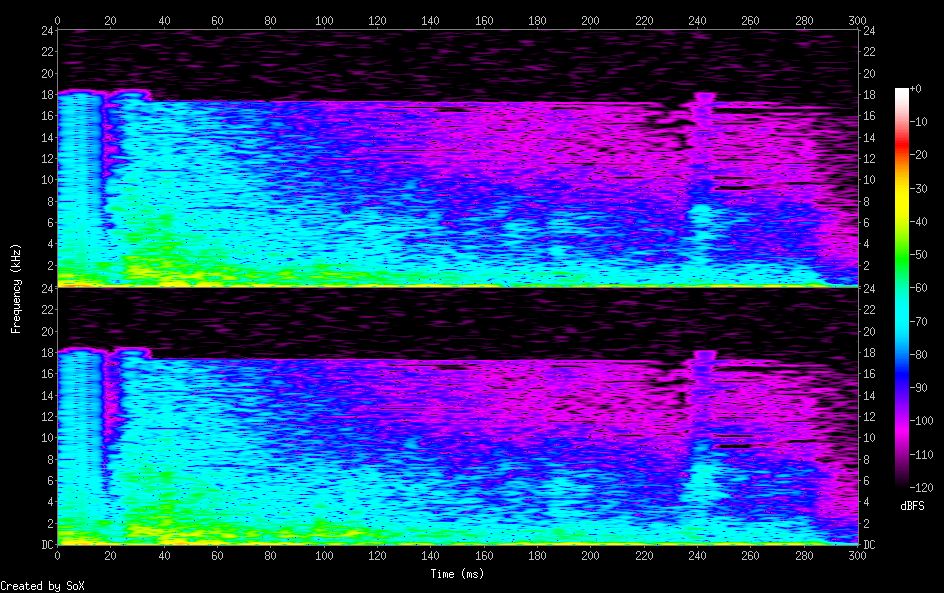

Land_snow
/sfx/land_snow/land_snow.rb
define :land_show do
sample :drum_bass_hard, rate: 0.2, amp: 0.9, cutoff: 60, sustain_level: 0.02
sample :perc_snap, rate: 0.8, amp: 0.7, cutoff: 80, sustain_level: 0.2
sample :glitch_perc1, rate: 0.58, amp: 0.47, sustain_level: 0.17, sustain: 0.28, decay_level: 0.1
use_synth :chipnoise
play 20, release: 0.04, amp: 0.05, sustain_level: 0.3
play 25, release: 0.08, amp: 0.1, sustain_level: 0.4
use_synth :sc808_clap
play 30, release: 0.01, amp: 0.08, sustain_level: 0.2
end
##| live_loop :show do
##| land_show
##| sleep 0.4
##| end
land_show